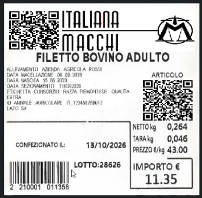
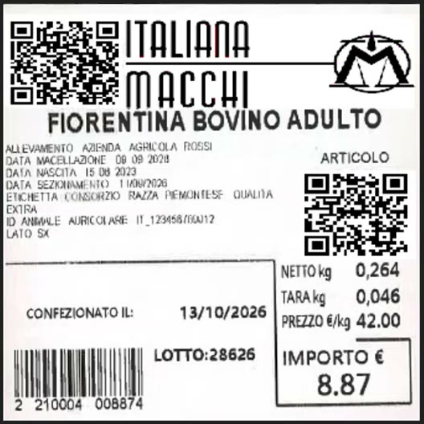
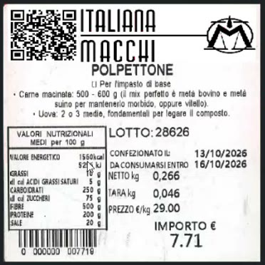
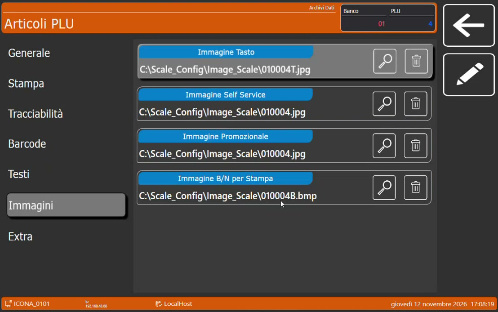
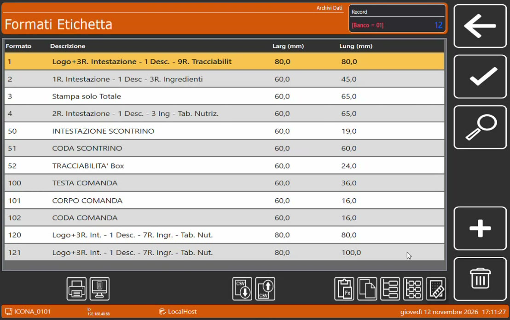
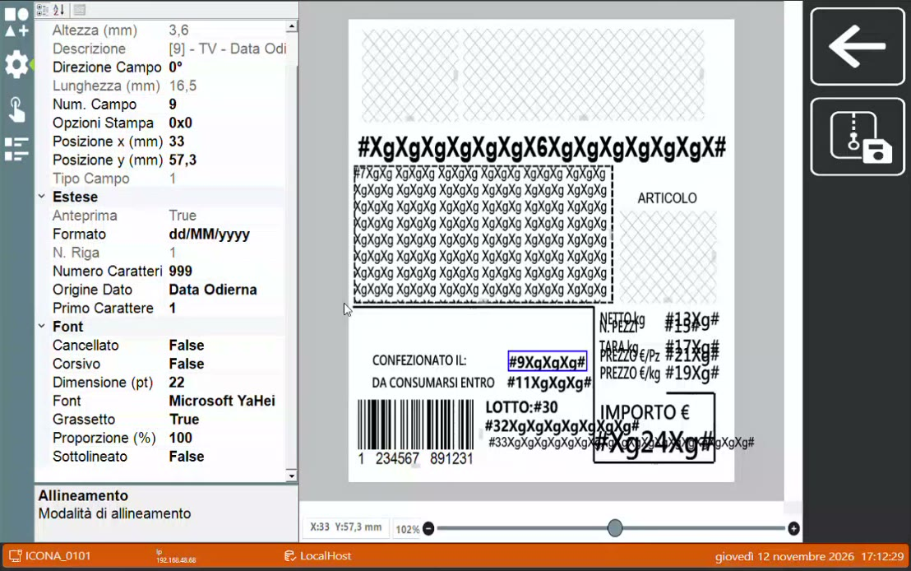

Etichette parlanti e immagini
Obiettivo
Conoscere l'etichettatura al volo della bilancia Icona e le etichette parlanti, cioè con QR code che rimandano a contenuti aggiornabili, e sapere dove si impostano le immagini e i campi del formato etichetta.
Prerequisiti
- Bilancia Icona con formati etichetta configurati.
- Lotti disponibili sulla bilancia (Vendita al banco con il lotto).
Etichettare al volo
La bilancia ha una modalità di etichettatura avanzata, da usare quando le etichette da produrre sono molte. Ma si può etichettare anche al volo, senza cambiare modalità: è il caso del take-away, la vaschetta preparata e messa momentaneamente nel banco mentre si lavora.
- Seleziona l'articolo.
- Scegli il lotto di tracciabilità o di produzione.
- Invece dell'operatore di vendita, tocca l'operatore destinato all'etichetta.
La bilancia stampa l'etichetta con il layout grafico previsto.
Senza cambiare la carta
Se nella bilancia c'è un rotolo adesivo, non serve togliere la carta e mettere quella per etichette: il rotolo adesivo stampa direttamente il layout grafico dell'etichetta.
Le informazioni di tracciabilità si comunicano al cliente sul totem, sulla lavagnetta o etichetta elettronica, oppure su un'etichetta cartacea: questa è la terza via.
Che cos'è un'etichetta parlante
Oltre ai dati di tracciabilità, tara, peso netto e prezzo, l'etichetta può portare uno o più QR code, che il cliente inquadra con il telefono.

Etichetta di un taglio: un QR code nell'intestazione e uno riferito all'articolo.
| QR code | Esempi di utilizzo |
|---|---|
| Dell'intestazione | Rimando a una pagina video che racconta la storia dell'azienda |
| Dell'articolo | Dati nutrizionali aggiuntivi del prodotto, oppure un video con i consigli di preparazione (per esempio come cucinare la fiorentina) |

Etichetta della fiorentina: il QR code dell'articolo porta ai consigli di preparazione.
Perché \"parlante\"
Il contenuto dietro al QR code si può cambiare in qualsiasi momento: collegandolo a un altro indirizzo si modifica, di fatto, anche un'etichetta già uscita dal negozio, senza alcuno sforzo. È un valore aggiunto da proporre: molte attività etichettano anche per conto terzi.
L'etichetta di un preparato
Per un prodotto lavorato, come il polpettone, serve un layout diverso. Non si riportano i dati della mezzena ma:
- il lotto di produzione;
- le date (confezionato il, da consumarsi entro);
- gli ingredienti e gli eventuali allergeni;
- la tabella dei valori nutrizionali, che è obbligatoria.

Etichetta di un preparato.
Dove si imposta
Le immagini dell'articolo
Sulla bilancia, nell'anagrafica Articoli PLU, la sezione Immagini permette di agganciare all'articolo più immagini, una per ogni ambito di utilizzo della bilancia: Immagine Tasto, Immagine Self Service, Immagine Promozionale e Immagine B/N per Stampa. Quest'ultima è quella agganciata in fase di stampa: nell'etichetta parlante è il QR code dell'articolo.

La sezione Immagini dell'articolo sulla bilancia.
L'immagine per la stampa è un file BMP monocromatico: la stampante della bilancia è termica e stampa in bianco e nero. Gli altri dati dell'articolo non si inseriscono a mano sulla bilancia: arrivano da HyperStore o da Hyperetail e si aggiornano da soli quando cambiano.
Aggiornare i QR code dal PC
Le immagini stanno in una cartella della bilancia raggiungibile in rete. Dal PC di back office, dove c'è HyperStore, basta creare un collegamento a quella cartella. A quel punto ci sono due modi per cambiare ciò che l'etichetta comunica:
- sovrascrivere il file dell'immagine: le etichette stampate da quel momento portano il nuovo QR code;
- lasciare lo stesso QR code e cambiare il contenuto della pagina a cui rimanda: si aggiornano così anche le etichette già stampate.
Il formato etichetta
Nei Formati Etichetta l'etichetta si disegna liberamente, non solo a tabelle ma anche in modo grafico.

I formati etichetta disponibili sulla bilancia.

L'editor: a sinistra le proprietà del campo selezionato, a destra l'anteprima dell'etichetta.
| Elemento | Possibilità |
|---|---|
| Campo immagine | Può prendere l'immagine agganciata al PLU, oppure un'altra immagine presente sulla bilancia |
| Campo data | L'origine può essere la data odierna oppure la data di produzione, che può essere diversa; il formato della data è modificabile |
| Font | Si possono usare i font di Windows |
L'emissione dell'etichetta è istantanea: la bilancia monta una stampante ad alta velocità.
Immagini e video promozionali
Dalla stessa postazione si gestiscono anche i contenuti multimediali dell'ecosistema, con un semplice copia e incolla dei file:
- le immagini e i video pubblicitari sul monitor lato cliente della bilancia (in 4K), con i relativi palinsesti;
- le immagini sul totem;
- le immagini sul monitor eliminacode.
Argomento di vendita
Il cliente è dentro il negozio: è quello il momento per raggiungerlo con contenuti pubblicitari e promozionali. L'esercente può gestire tutto in autonomia.